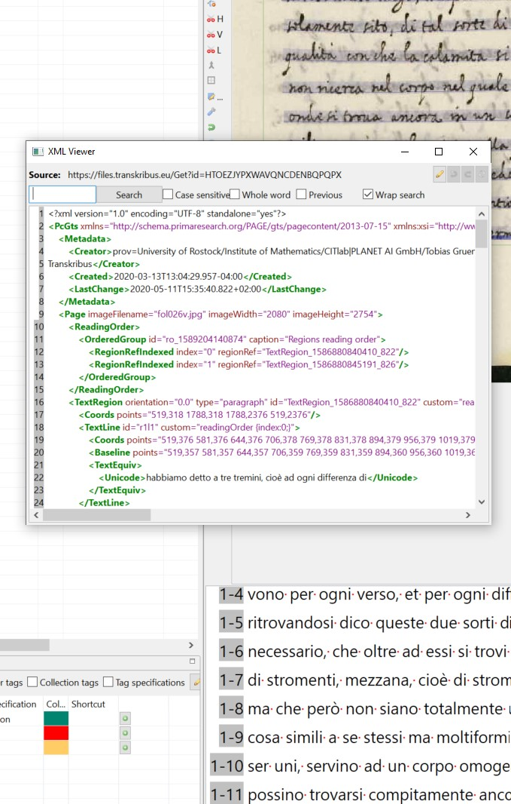

documentation
|  |
All
transcriptions were made with the help of the tool Transkribus.
For
handwritten material, all text was transcribed manually (see credits).
For early-modern prints, the HTR model Noscemus
was used, but the
result was corrected manually. A fully searchable interface is provided
on read&search. Image viewers are provided by Vikus viewer (on Github). Image tagging was made in ICAT – Image Categorization Utility (on Github). This tool was designed by Mike Bennett exclusively for this purpose and this project. Bibliographic metadata is provided through a Zotero library (to be made publicly available soon). Integration of all visual and textual source into the SCTA (Scholastic Commentaries and Texts Archive) is in development. See also:
Christoph Sander, Magnes: der Magnetstein und der Magnetismus in den Wissenschaften der Frühen Neuzeit. Mittellateinische Studien und Texte 53. Leiden; Boston: Brill, 2020. (partially OpenAccess). |